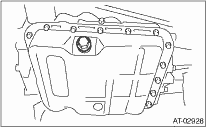
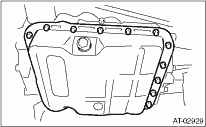

1. Set the vehicle on a lift.
2. Disconnect the ground cable from the battery.
3. Lift the vehicle.
4. Clean the transmission exterior.
5. Remove the drain plug (ATF) and gasket to drain ATF.

6. Replace the gasket with new part, and then tighten the drain plug (ATF).
Tightening torque:
25 N·m (2.5 kgf-m, 18.1 ft-lb)
7. Remove the oil pan.
NOTE:
Be careful not to allow foreign matter such as dust or dirt to enter the oil pan.

8. Remove the magnet.
9. Clean the magnet.
10. Completely remove the remaining liquid gasket on the transmission case and oil pan.
11. Remove the control valve connector.

12. Remove the ATF cooler pipe.
13. Remove the control valve body.
NOTE:
The control valve body is replaced as an assembly only, because it is a non-disassembly part.